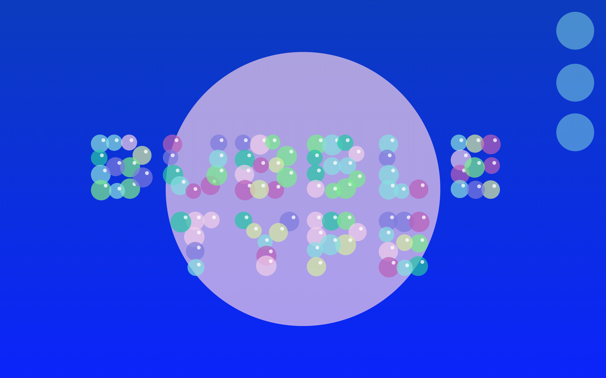
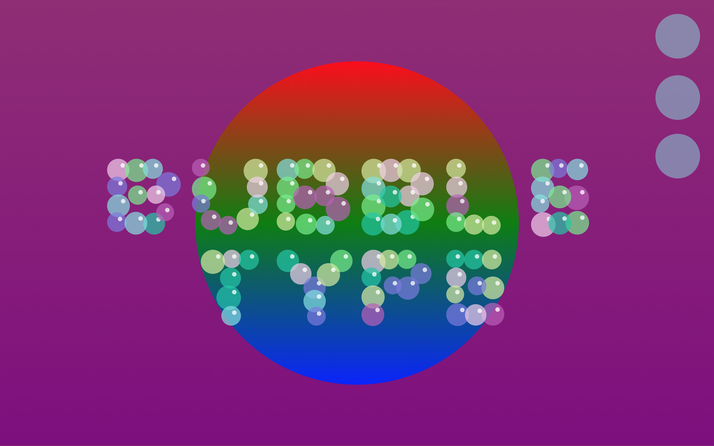
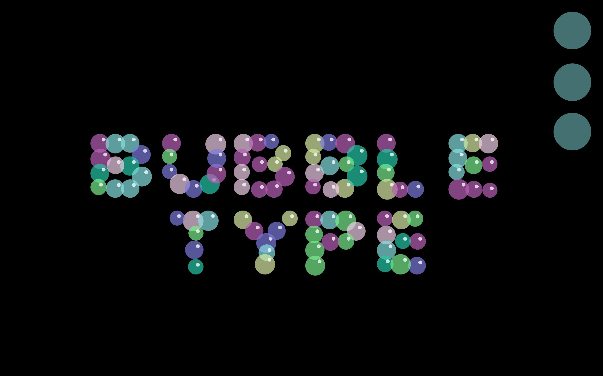
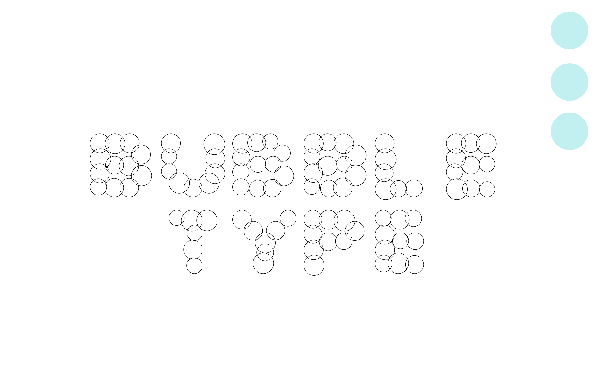
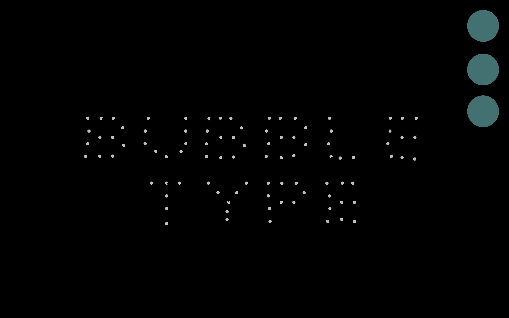
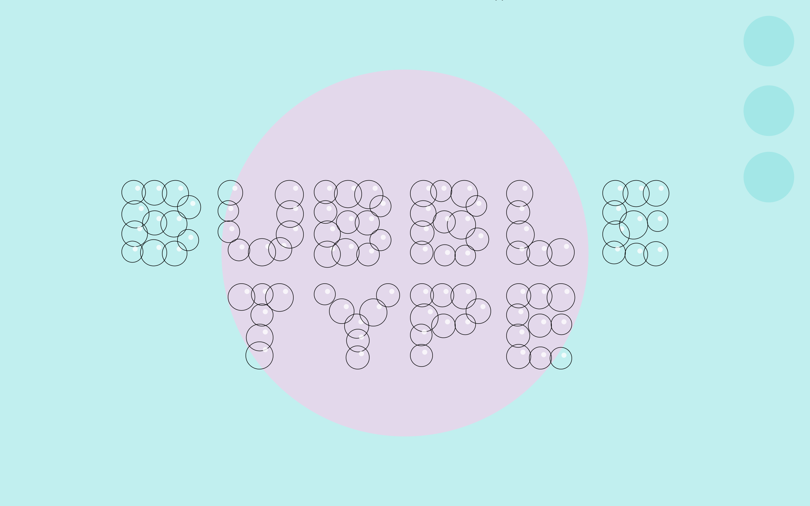

Bubble Type is a playful and interactive digital typeface made entirely from HTML, CSS and JQUERY/JS. I was inspired to make this typeface from listening to a lot of bubblegum pop music. To play with Bubble Type click here. The Bubble Type Specimen website allows you to view the digital typeface on different backgrounds, and in a second style. Just press the buttons to the right of the page.
Video of Bubble Type Specimen Website
BUBBLE TYPE VARIATIONS
Below are different results from playing around with Bubble Type on the Specimen website. Bubble Type constantly changes by refreshing the specimen page, mimicking the random and playful nature of actual bubbles. This allows for a wider variety of different results.

Bubble Type on pink and blue background

Bubble Type on gradient and purple background

Bubble Type on all black background

Bubble Type (Stroke) on all white background

Bubble Type (Stroke) on all black background

Bubble Type (Stroke) on pink and light blue background